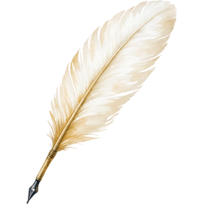
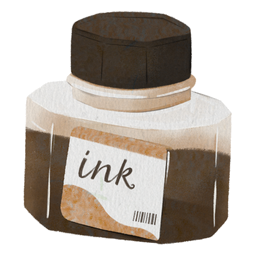
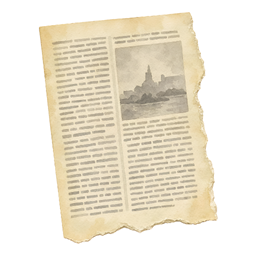
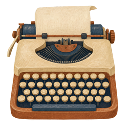
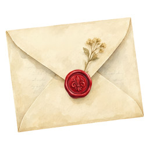
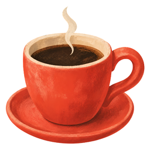

Kitaplığın hayaleti Magnus geceleri ortaya çıkıyor. Fenerini sallayarak rafların arasında dolaşıyor ve ortalığı birbirine katıyor. Tüyler, mürekkep, sayfalar ve türlü tuhaf şeyler havada uçuşuyor.
Alttaki kitabı sürükle ve düşenleri topla.
Bazı sayfalar kayıp bir metne ait. Puanların biriktikçe sayfalara dönüşecek. Bütün sayfaları bulduğunda, ne olduğunu bilmediğin metnin adı ve yazarı ortaya çıkacak.
Ama dikkat et. Hayalet bazen sansür damgası, kahve fincanı gibi daha tehlikeli şeyler de fırlatıyor. Arada bir rüzgâr çıkıp ortalığı daha da karıştırıyor.
Ve bütün sayfaları bulduğunda... Hayalet Magnus da merakına yenik düşüp bulduğun metni senden önce okumaya başlayabilir.
Ne bulacağını sen de bilmiyorsun.
 | Tüy — 1 puan |
 | Mürekkep — 2 puan |
 | Sayfa — 3 puan |
 | Daktilo — 5 puan, nadir. Yakalarsan zaman yavaşlar. |
 | Mühürlü zarf — içinden ne çıkacağı belli olmaz. |
| Sansür damgası — kitaba düşmesin! (−6) | |
 | Kahve — sayfalara dökülmesin! (−4) |
Kaçırdığın nesneler de puanına mal olur. Kırmızılar bazen iyi bir nesnenin hemen yanına düşer. Hangisini yakalayacaksın?